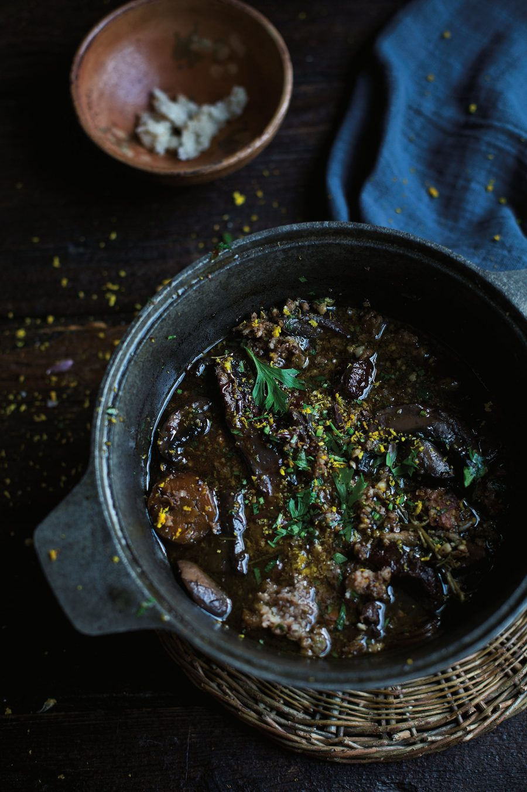

Venison (or lamb) shoulder and mushroom stew with chocolate and orange picada

This rich, satisfying dish has a deep, vibrant flavour from all the different earthy and potent ingredients. Serve with creamy polenta or mashed potatoes. You can also make picada with fresh bread by toasting and drying it out first, but really it’s an invaluable way to upcycle odds and ends of old bread. Picada is traditionally made in a mortar, but it’ll be fine cut by hand or pulse-blended, too; just aim for a slightly chunky texture.
For the picada
Melt the butter in a large, heavy casserole dish on a medium heat, then fry the meat until browned all over. Add the mushrooms, onion, carrot and minced garlic, cook, stirring occasionally, for 15 minutes, until softened, then add the wine, bring to a boil and deglaze the pan. Add 150ml water and the rosemary, return to a boil, then turn down to a simmer and cook gently for 30 minutes.
Meanwhile, heat the oven to 170C (150C fan)/325F/gas 3. Cover the pan and transfer to the warm oven for two hours, until the meat is very tender.
While the stew is cooking, make the picada. Soak the stale bread in water for a few seconds, then squeeze out as much liquid as you can and tear into small pieces. Crush the chopped garlic in a mortar (add a little salt to help break it down), then grind in the walnuts and parsley. Stir in the bread, chocolate, zest and a little pepper, and set aside.
When the stew’s time is up, transfer back to the stovetop, sprinkle the picada evenly over the top, then return to the oven uncovered and cook for another 15 minutes until thickened. Serve with mash or soft polenta.